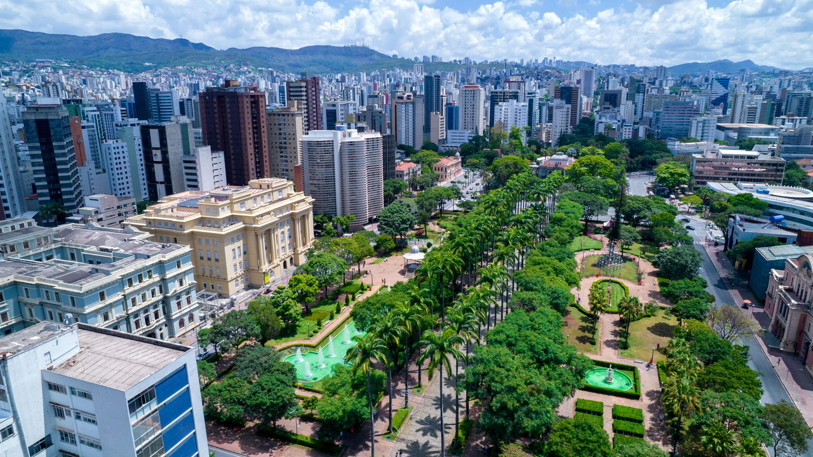
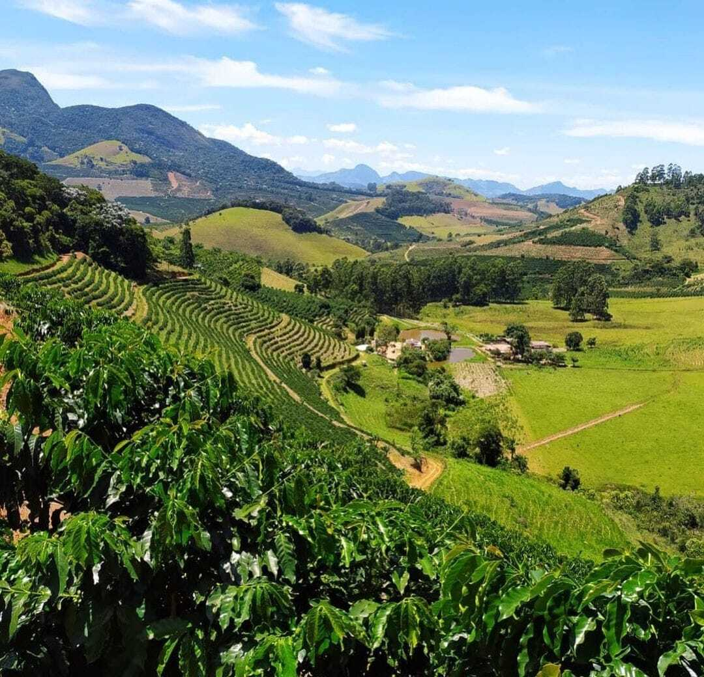
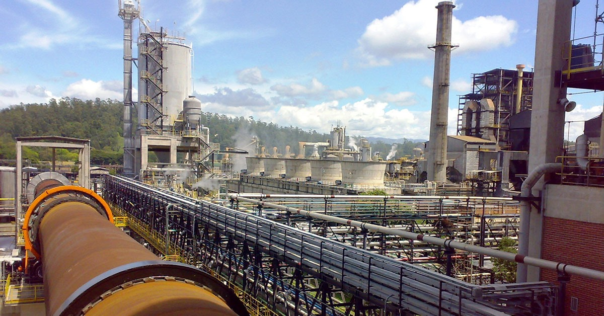

Minas Gerais é um dos estados mais importantes do Brasil, localizado na região Sudeste. Com uma vasta extensão territorial, é o segundo estado mais populoso do país e o quarto em área. Sua geografia é bastante diversificada, com serras, vales e rios que marcam a paisagem. O relevo montanhoso influenciou historicamente a formação de cidades em regiões elevadas, como Ouro Preto e Diamantina, que são exemplos marcantes da arquitetura colonial brasileira.

O estado é líder na produção de café, ferro e leite, além de ser um dos maiores exportadores de minérios, especialmente ferro e níquel.

A cafeicultura, por exemplo, é responsável por grande parte do Valor Adicionado Bruto (VAB) da agropecuária estadual, com crescimento significativo nos últimos anos.

Além disso, Minas Gerais possui um setor industrial robusto, com destaque para a indústria automobilística, metalúrgica e de bens de consumo. A capital, Belo Horizonte, é um polo de inovação e tecnologia, abrigando empresas como Cemig, MRV Engenharia e Localiza.